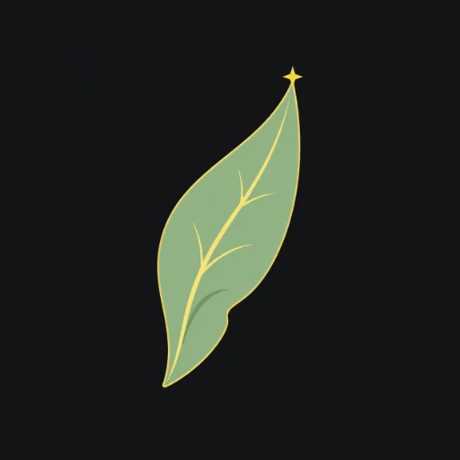

I
อิลวาริส
Ilvarisผู้เดินสองโลกWalkers of Two Worlds
สายเลือดที่ใกล้เคียงมนุษย์ที่สุด มีเพียงปลายหูแหลม—สั้นกว่าเอลฟ์—ที่เผยธาตุแท้ พวกเขาจึงใช้ชีวิตปะปนในนครมนุษย์มาช้านาน ในฐานะทูต พ่อค้า นักปราชญ์ และสายลับผู้เชื่อมสองโลก
พลังประจำเผ่า · Racial Ability
เสียงกระซิบสายเลือด · Bloodwhisper
สัมผัสอารมณ์และคำโกหกในใจผู้อื่นได้ พร้อมน้ำเสียงที่โน้มน้าวและปลอบประโลม